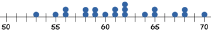
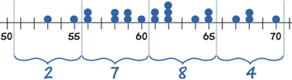

Mean, Median and Mode
from Grouped Frequencies

Explained with Three Examples
The Race and the Naughty Puppy
This starts with some raw data (not a grouped frequency yet) ...

Alex timed 21 people in the sprint race, to the nearest second:
59, 65, 61, 62, 53, 55, 60, 70, 64, 56, 58, 58, 62, 62, 68, 65, 56, 59, 68, 61, 67
To find the Mean Alex adds up all the numbers, then divides by how many numbers:
Mean = 59 + 65 + 61 + 62 + 53 + 55 + 60 + 70 + 64 + 56 + 58 + 58 + 62 + 62 + 68 + 65 + 56 + 59 + 68 + 61 + 6721
= 61.38095...
To find the Median Alex places the numbers in value order and finds the middle number.

In this case the median is the 11th number:
53, 55, 56, 56, 58, 58, 59, 59, 60, 61, 61, 62, 62, 62, 64, 65, 65, 67, 68, 68, 70
Median = 61
To find the Mode, or modal value, Alex places the numbers in value order then counts how many of each number. The Mode is the number which appears most often (there can be more than one mode):
53, 55, 56, 56, 58, 58, 59, 59, 60, 61, 61, 62, 62, 62, 64, 65, 65, 67, 68, 68, 70
62 appears three times, more often than the other values, so Mode = 62
Grouped Frequency Table
Alex then makes a Grouped Frequency Table:
| Seconds | Frequency |
|---|---|
| 51 - 55 | 2 |
| 56 - 60 | 7 |
| 61 - 65 | 8 |
| 66 - 70 | 4 |

So 2 runners took between 51 and 55 seconds, 7 took between 56 and 60 seconds, etc
Oh No!
Suddenly all the original data gets lost (naughty pup!)
Only the Grouped Frequency Table survived ...
... can we help Alex calculate the Mean, Median and Mode from just that table?
The answer is ... no we can't. Not accurately anyway. But, we can make estimates.
Estimating the Mean from Grouped Data
So all we have left is:
| Seconds | Frequency |
|---|---|
| 51 - 55 | 2 |
| 56 - 60 | 7 |
| 61 - 65 | 8 |
| 66 - 70 | 4 |
The groups (51-55, 56-60, etc), also called class intervals, are of width 5
The midpoints are in the middle of each class: 53, 58, 63 and 68

We can estimate the Mean by using the midpoints.
So, how does this work?
Think about the 7 runners in the group 56 - 60: all we know is that they ran somewhere between 56 and 60 seconds:
- Maybe all seven of them did 56 seconds,
- Maybe all seven of them did 60 seconds,
- But it is more likely that there is a spread of numbers: some at 56, some at 57, etc
So we take an average and assume that all seven of them took 58 seconds.
Let's now make the table using midpoints:
| Midpoint | Frequency |
|---|---|
| 53 | 2 |
| 58 | 7 |
| 63 | 8 |
| 68 | 4 |
Our thinking is: "2 people took 53 sec, 7 people took 58 sec, 8 people took 63 sec and 4 took 68 sec". In other words we imagine the data looks like this:
53, 53, 58, 58, 58, 58, 58, 58, 58, 63, 63, 63, 63, 63, 63, 63, 63, 68, 68, 68, 68
Then we add them all up and divide by 21. The quick way to do it is to multiply each midpoint by each frequency:
| Midpoint x |
Frequency f |
Midpoint × Frequency fx |
|---|---|---|
| 53 | 2 | 106 |
| 58 | 7 | 406 |
| 63 | 8 | 504 |
| 68 | 4 | 272 |
| Totals: | 21 | 1288 |
And then our estimate of the mean time to complete the race is:
Estimated Mean = 128821 = 61.333...
Very close to the exact answer we got earlier.
Estimating the Median from Grouped Data
Let's look at our data again:
| Seconds | Frequency |
|---|---|
| 51 - 55 | 2 |
| 56 - 60 | 7 |
| 61 - 65 | 8 |
| 66 - 70 | 4 |
The median is the middle value, which in our case is the 11th one, which is in the 61 - 65 group:
We can say "the median group is 61 - 65"
But if we want an estimated Median value we need to look more closely at the 61 - 65 group.
We call it "61 - 65", but it really includes values from 60.5 up to (but not including) 65.5.
Why? Well, the values are in whole seconds, so a real time of 60.5 is measured as 61. Likewise 65.4 is measured as 65.
At 60.5 we already have 9 runners, and by the next boundary at 65.5 we have 17 runners. By drawing a straight line in between we can pick out where the median frequency of n/2 runners is:

And this handy formula does the calculation:
Estimated Median = L + (n/2) − BG × w
where:
- L is the lower class boundary of the group containing the median
- n is the total number of values
- B is the cumulative frequency of the groups before the median group
- G is the frequency of the median group
- w is the group width
For our example:
- L = 60.5
- n = 21
- B = 2 + 7 = 9
- G = 8
- w = 5
Estimating the Mode from Grouped Data
Again, looking at our data:
| Seconds | Frequency |
|---|---|
| 51 - 55 | 2 |
| 56 - 60 | 7 |
| 61 - 65 | 8 |
| 66 - 70 | 4 |
We can easily find the modal group (the group with the highest frequency), which is 61 - 65
We can say "the modal group is 61 - 65"
But the actual Mode may not even be in that group! Or there may be more than one mode. Without the raw data we don't really know.
But, we can estimate the Mode using the following formula:
Estimated Mode = L + fm − fm-1(fm − fm-1) + (fm − fm+1) × w
where:
- L is the lower class boundary of the modal group
- fm-1 is the frequency of the group before the modal group
- fm is the frequency of the modal group
- fm+1 is the frequency of the group after the modal group
- w is the group width
In this example:
- L = 60.5
- fm-1 = 7
- fm = 8
- fm+1 = 4
- w = 5
Our final result is:
- Estimated Mean: 61.333...
- Estimated Median: 61.4375
- Estimated Mode: 61.5
(Compare that with the true Mean, Median and Mode of 61.38..., 61 and 62 that we got at the very start.)
And that is how it is done.
Now let us look at two more examples, and get some more practice along the way!
Baby Carrots Example
Example: You grew fifty baby carrots using special soil. You dig them up and measure their lengths (to the nearest mm) and group the results:
| Length (mm) | Frequency |
|---|---|
| 150 - 154 | 5 |
| 155 - 159 | 2 |
| 160 - 164 | 6 |
| 165 - 169 | 8 |
| 170 - 174 | 9 |
| 175 - 179 | 11 |
| 180 - 184 | 6 |
| 185 - 189 | 3 |
Mean
| Length (mm) | Midpoint x |
Frequency f |
fx |
|---|---|---|---|
| 150 - 154 | 152 | 5 | 760 |
| 155 - 159 | 157 | 2 | 314 |
| 160 - 164 | 162 | 6 | 972 |
| 165 - 169 | 167 | 8 | 1336 |
| 170 - 174 | 172 | 9 | 1548 |
| 175 - 179 | 177 | 11 | 1947 |
| 180 - 184 | 182 | 6 | 1092 |
| 185 - 189 | 187 | 3 | 561 |
| Totals: | 50 | 8530 |
Estimated Mean = 853050 = 170.6 mm
Median
The Median is the mean of the 25th and the 26th length, so is in the 170 - 174 group:
- L = 169.5 (the lower class boundary of the 170 - 174 group)
- n = 50
- B = 5 + 2 + 6 + 8 = 21
- G = 9
- w = 5
Mode
The Modal group is the one with the highest frequency, which is 175 - 179:
- L = 174.5 (the lower class boundary of the 175 - 179 group)
- fm-1 = 9
- fm = 11
- fm+1 = 6
- w = 5
Age Example
Age is a special case.
When we say "Sarah
is 17" she stays
"17" up until her eighteenth birthday.
She might be 17 years and 364 days old and still be called "17".
This changes the midpoints and class boundaries.
Example: The ages of the 112 people who live on a tropical island are grouped as follows:
| Age | Number |
|---|---|
| 0 - 9 | 20 |
| 10 - 19 | 21 |
| 20 - 29 | 23 |
| 30 - 39 | 16 |
| 40 - 49 | 11 |
| 50 - 59 | 10 |
| 60 - 69 | 7 |
| 70 - 79 | 3 |
| 80 - 89 | 1 |
A child in the first group 0 - 9 could be almost 10 years old. So the midpoint for this group is 5 not 4.5
The midpoints are 5, 15, 25, 35, 45, 55, 65, 75 and 85
Similarly, in the calculations of Median and Mode, we will use the class boundaries 0, 10, 20 etc
Mean
| Age | Midpoint x |
Number f |
fx |
|---|---|---|---|
| 0 - 9 | 5 | 20 | 100 |
| 10 - 19 | 15 | 21 | 315 |
| 20 - 29 | 25 | 23 | 575 |
| 30 - 39 | 35 | 16 | 560 |
| 40 - 49 | 45 | 11 | 495 |
| 50 - 59 | 55 | 10 | 550 |
| 60 - 69 | 65 | 7 | 455 |
| 70 - 79 | 75 | 3 | 225 |
| 80 - 89 | 85 | 1 | 85 |
| Totals: | 112 | 3360 |
Estimated Mean = 3360112 = 30
Median
The Median is the mean of the ages of the 56th and the 57th people, so is in the 20 - 29 group:
- L = 20 (the lower class boundary of the class interval containing the median)
- n = 112
- B = 20 + 21 = 41
- G = 23
- w = 10
Mode
The Modal group is the one with the highest frequency, which is 20 - 29:
- L = 20 (the lower class boundary of the modal class)
- fm-1 = 21
- fm = 23
- fm+1 = 16
- w = 10
Summary
- For grouped data, we cannot find the exact Mean, Median and Mode, we can only give estimates.
- To estimate the Mean use the midpoints of the class intervals:
Estimated Mean = Sum of (Midpoint × Frequency)Sum of Frequency
- To estimate the Median use:
Estimated Median = L + (n/2) − BG × w
where:
- L is the lower class boundary of the group containing the median
- n is the total number of data
- B is the cumulative frequency of the groups before the median group
- G is the frequency of the median group
- w is the group width
- To estimate the Mode use:
Estimated Mode = L + fm − fm-1(fm − fm-1) + (fm − fm+1) × w
where:
- L is the lower class boundary of the modal group
- fm-1 is the frequency of the group before the modal group
- fm is the frequency of the modal group
- fm+1 is the frequency of the group after the modal group
- w is the group width